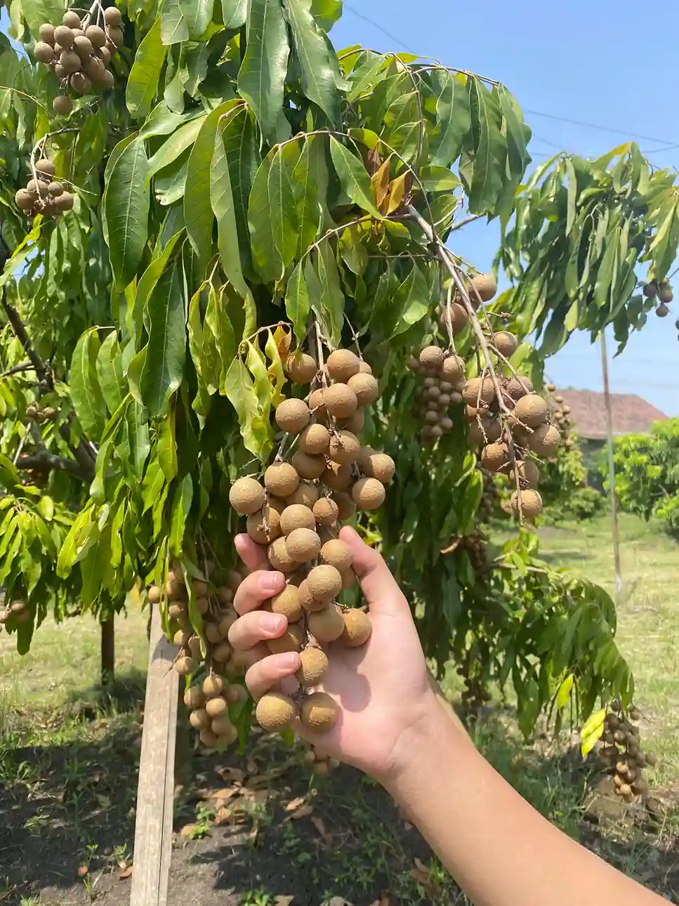
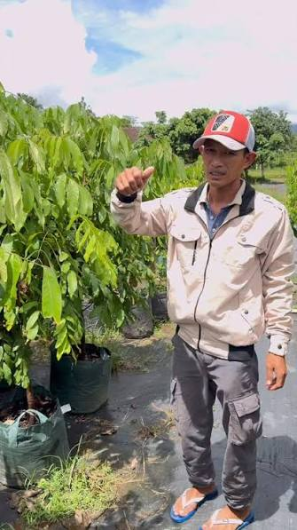
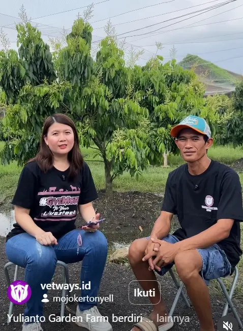
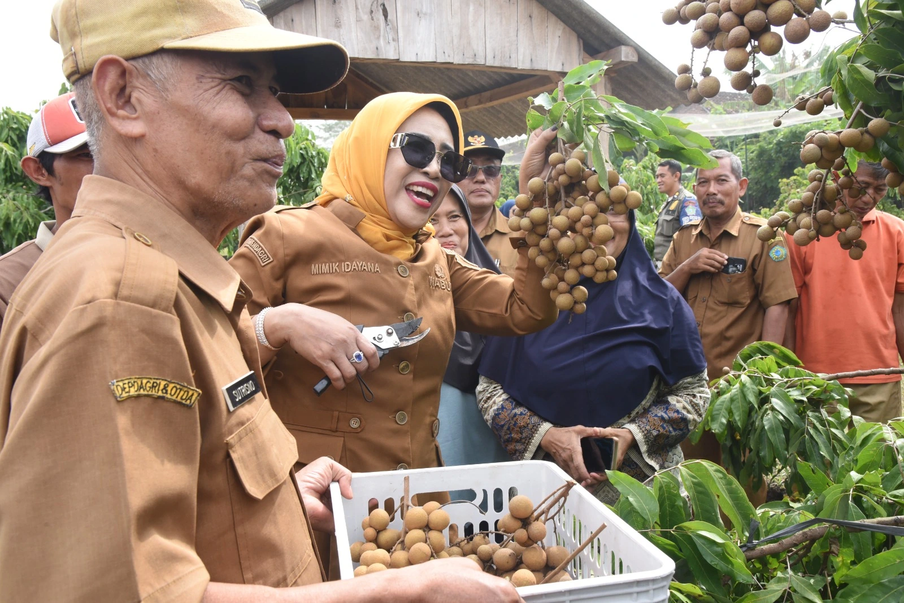
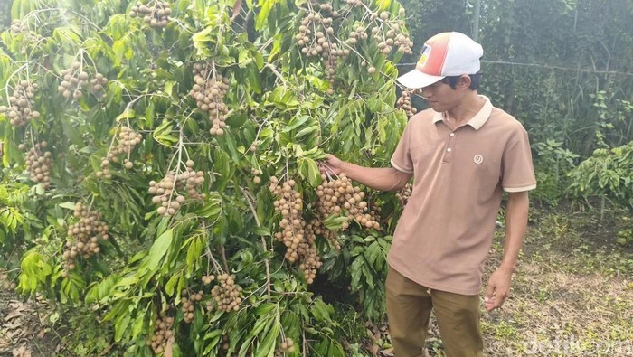
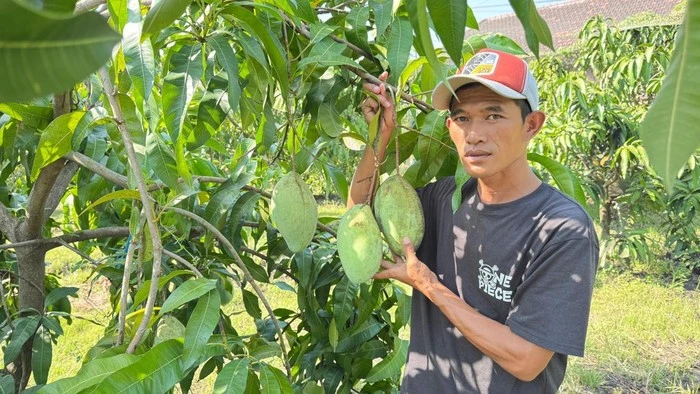

TENTANG KAMI
Yulianto Garden Farm adalah salah satu destinasi wisata petik buah kelengkeng yang berlokasi di Desa Tulangan, Kecamatan Tulangan, Sidoarjo.
Kami menyediakan kebutuhan pertanian secara menyeluruh, mulai dari pupuk booster, bibit, dan kebutuhan lainnya. Kami juga membuka layanan untuk merasakan sensasi memetik langsung kelengkeng dari pohonnya ketika memasuki masa panen. Layanan kami mencakup Penyuluhan dan Edukasi, Wisata Petik Kelengkeng, Jual Beli Kebutuhan Pertanian, Perikanan, dan Peternakan.
Kenapa harus
Yulianto Garden Farm?
Mendapatkan pasokan buah premium dan pengalaman agrowisata edukatif bersama Yulianto Garden Farm adalah pilihan yang tepat. Berdiri sejak 2021 di Desa Tulangan, Sidoarjo, kami mengelola kawasan agrowisata terpadu yang memadukan perkebunan unggulan, peternakan, dan perikanan dalam satu ekosistem berkelanjutan.
Kami mendedikasikan operasional ini untuk membuktikan bahwa kemandirian pangan lokal mampu menghasilkan komoditas dengan kualitas yang bersaing dengan produk impor, langsung dari lahan kami ke tangan Anda.
-
Mengelola ekosistem berkelanjutan yang memadukan perkebunan buah, peternakan kambing/domba, dan perikanan di Sidoarjo.
-
Fokus membudidayakan varietas unggul bernilai tinggi, khususnya Kelengkeng New Kristal dan Mangga Jumbo Mahatir.
-
Menerapkan perawatan intensif untuk memastikan standar kualitas terbaik pada setiap hasil panen dan hewan ternak.
PRODUK
Produk Kami Lahir dari Kebutuhan Para Petani Kelengkeng di Indonesia yang Ingin Meningkatkan Tonase Panen Sektor Pertaniannya.

RUMPUT ODOT CACAH FRESH
- 100% Odot Murni Tanpa Campuran
- Baru Dipetik Saat Order Masuk (Fresh)
- Pengiriman Cepat Tanpa PO

PUPUK BOOSTER KELENGKENG
- Rangsang Bunga Luar Musim
- Efektif di Dataran Rendah
- Formula 100% Murni

SILASE MIX PAKAN TERNAK
- Praktis, Awet, dan Tahan Lamar
- Kaya Nutrisi Konsentrat Tinggin
- Mempercepat Penggemukan Hewan
JASA
Kami Menyediakan Jasa Konsultasi Bagi Anda Yang Memiliki Pertanyaan dan Kebingungan Terkait Usaha Perkebunan atau Peternakan

Solusi Pendampingan Pertanian & Peternakan Modern
Kami membantu Anda mengoptimalkan potensi lahan dan hasil produksi kelengkeng atau buah lain melalui program konsultasi terarah. Mulai dari manajemen perkebunan, peningkatan tonase panen, hingga efisiensi pakan ternak, kami siap memberikan panduan praktis yang telah teruji keberhasilannya di lapangan kami sendiri.
Konsultasi Via WhatsAppGALERI & FASILITAS
Jelajahi Berbagai Fasilitas dan Pengalaman Yang Bisa Kamu Nikmati Langsung di Yulianto Garden Farm
Pengunjung Yulianto Garden Farm
Lihat Semua Pengunjung
Ir. H. Bambang Haryo Soekartono, M.I.Pol.
Anggota DPR RI 2024 - 2029

Hj. Mimik Idayana
Wakil Bupati Sidoarjo 2025 - 2030

Vetways.id
Perusahaan Penyedia Suplemen dan Obat Hewan Ternak
Artikel Yulianto Garden Farm
Lihat Semua Artikel
Wabup Sidoarjo Apresiasi Keberadaan Wisata Petik Buah Kelengkeng
Yulianto Garden Farm dapat menjadi tempat favorit bagi penggemar buah kelengkeng. Di tempat tersebut buah kelengkeng dapat [...]
Baca Artikel
Kebun Kelengkeng Yulianto Kini Jadi Wisata Edukasi di Sidoarjo
Kesuksesan tidak selalu datang dari jalan yang mudah. Hal itu dibuktikan Yulianto, warga kecamatan Tulangan, Kabupaten Sidoarjo, yang [...]
Baca Artikel
Usai Kelengkeng, Yulianto Kembangkan Kebun Mangga Jumbo di Sidoarjo
Warga Tulangan, Yulianto, terus mengembangkan kawasan pertanian miliknya yang dikenal sebagai Yulianto Garden Farm. Setelah [...]
Baca Artikel